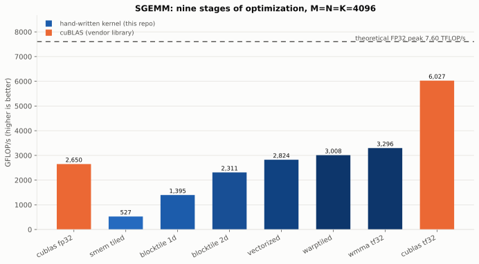
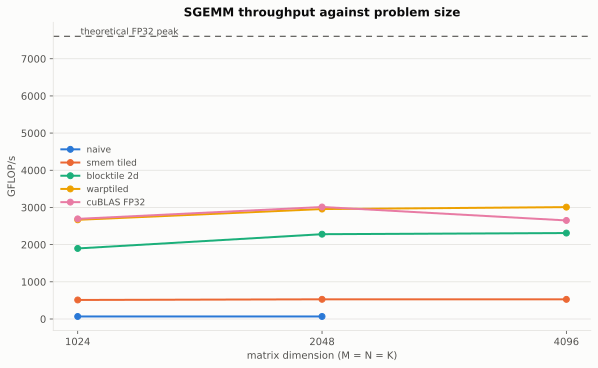
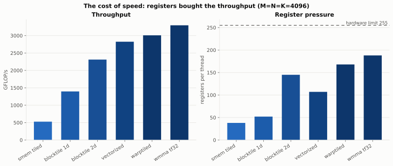
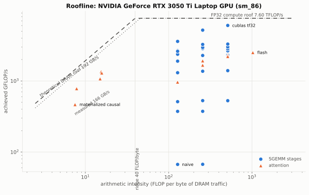
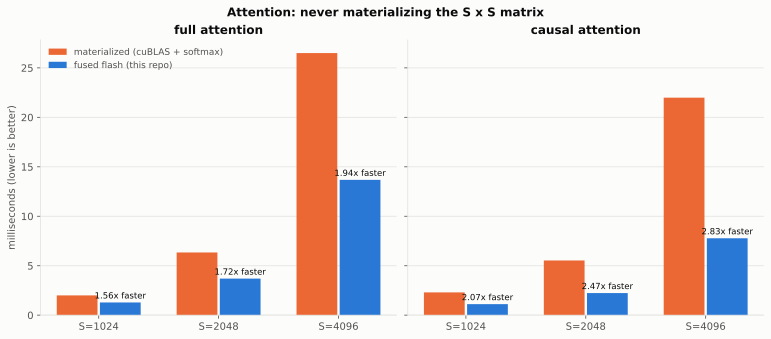
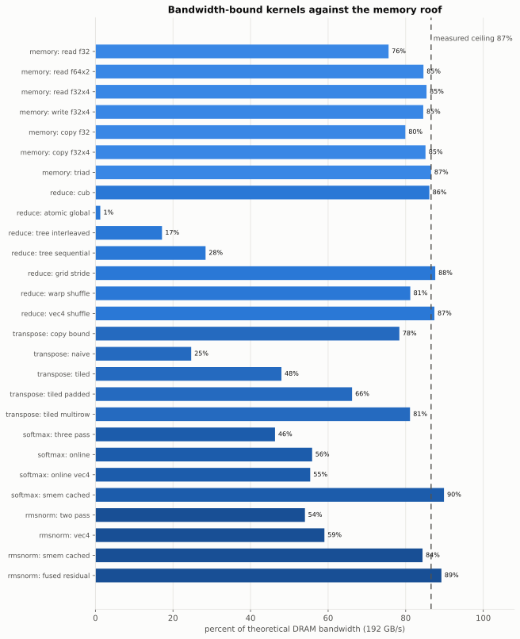
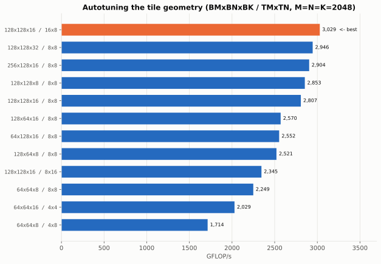

Hand-written CUDA kernels, measured against cuBLAS, CUB and the hardware's own roofline.
Every number on this page is read from results/results.json, the output of
warpsmith_bench. Nothing is transcribed.
Each stage adds exactly one technique to the previous one, so the gap between two
adjacent bars is what that single technique is worth.



Throughput was bought with registers. Occupancy falls as the register tile grows,
and throughput rises anyway - what matters is independent work in flight, not resident warps.
Where every kernel sits on the roofline

Arithmetic intensity decides which ceiling binds. Left of the ridge point a kernel
is starved by memory no matter how good its arithmetic is.
Attention: never materializing the score matrix

Bandwidth-bound kernels against the memory roof

Autotuning the tile geometry

The best tile shape is a property of this GPU's register file and shared memory,
so it is measured rather than assumed.
Every measurement
Click a column heading to sort. cv is the coefficient of variation across the
middle 90% of samples - the stability of the measurement itself.